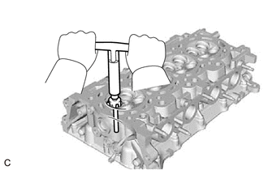
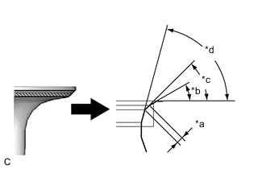

CYLINDER HEAD REPAIR

PROCEDURE
-
REPAIR VALVE SEAT
Note
-
Repair the valve seat while checking the seating position.
-
Release the cutter gradually to make the valve seat smooth.
-

Using a 45° cutter, resurface the valve seat so that the valve seat width is more than the standard.
-

*a Valve Seat Width *b 30° *c 45° *d 75° Using 30° and 75° cutters, resurface the valve seat so that the valve contacts the entire circumference of the valve seat. The contact should be in the center of the valve seat, and the valve seat width should be maintained within the specified range around the entire circumference of the valve seat.
Standard Valve Seat Width 1.0 to 1.4 mm (0.0394 to 0.0551 in.) -
Hand lap the valve and valve seat with an abrasive compound.
-
Check the valve seating position.
-